| 日付 | 2017年5月3日（水） - 2017年5月6日（土） | ||
|---|---|---|---|
| 山域 | 東北の山 | ||
| メンバー | 家族（妻、長女・6歳、長男・3歳） | ||
| 山行形態 | 子連れ3泊4日ホテル泊 | ||
| アクセス | 車、リフト | ||
| ルート (Map) |
|
4日目
本日は宮城の一大観光地である松島を訪問する。生憎、天候は今一つだ。
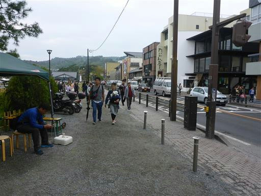
以前一人でここに来た時は福浦島を見ただけだったので、今回は遊覧船に乗ることにする。
早速チケットを買って桟橋の列に並ぶ。あっという間に後ろに長蛇の列ができる。
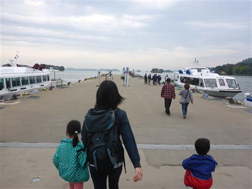
しばらく待つと船が到着する。かなりの大型船だ。船は30分に1本運行している。
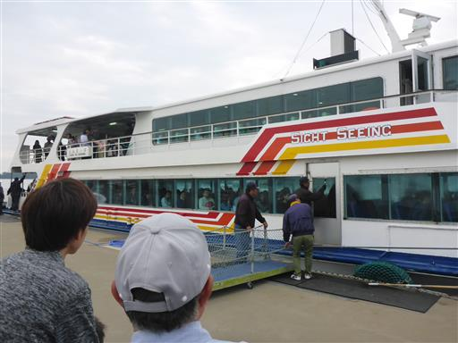
船の内部。チケット乗り場で教えてもらった左前部の席を確保する。
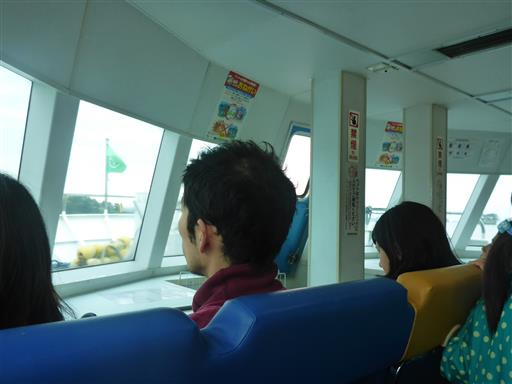
出航。
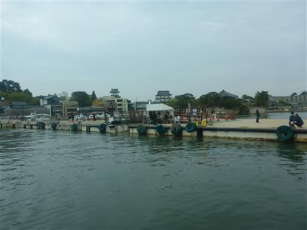
子供たちは席に座っていられず、後方の甲板に移動する。
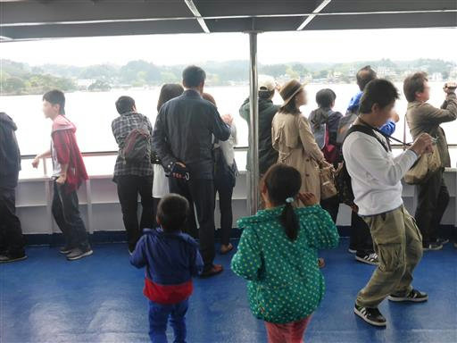
しばらく進むとウミネコが船を追いかけて飛んでくる。
子供たちは大興奮だ。
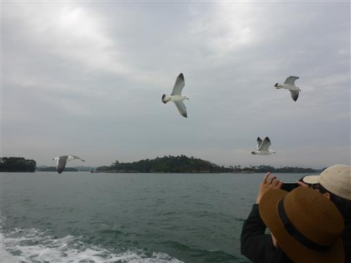
糞害のため餌やりは禁止されているはずだが、上部甲板の人が餌を投げている。
空中で即座に反応して上手くキャッチしている。
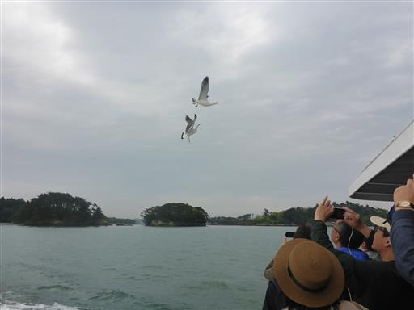
子供たちは鳥を見学した後、ずっと波を見つめ続けている。
松島の景観は全く目に入っていないようだ。
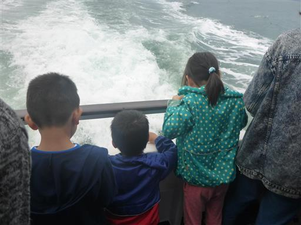
子供たちが波を見ている間に島見学をする。こちらは鐘島。
岩に4つの穴が開いている。
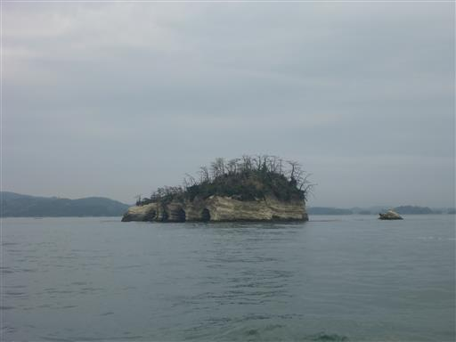
仁王島。非常に不思議な形の岩だ。
船内に戻っての撮影だが、窓越しだとあまりきれいに見えない。
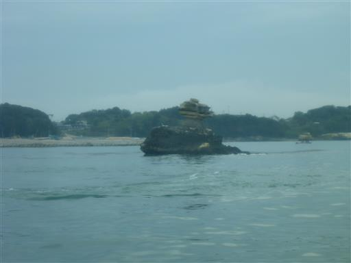
右の断崖絶壁に囲まれた島は陰田島。
松島湾には海の中に無数の奇岩が浮かんでいる。
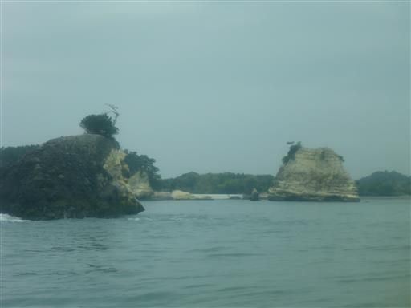
桂島。この島には集落があり人が住んでいる。
松島に浮かぶ島に有人島があるとは知らなかった。
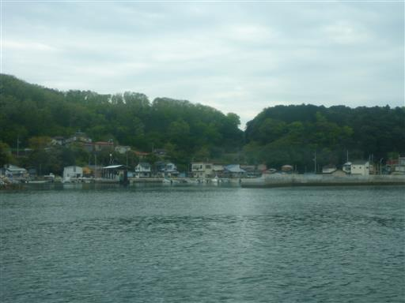
あちらこちらで牡蠣の養殖が行われている。養殖に適した地形なのだろう。
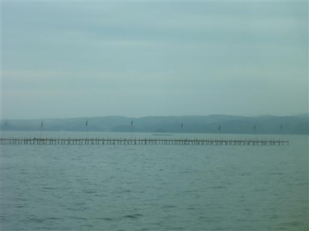
およそ50分の観光を終えて船を下りる。少し雨がぱらついてきた。
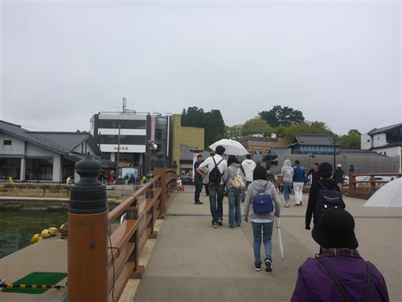
利久で昼食をとる。牛タンで有名なチェーン店だ。
仙台は牛タンが有名なので、宮城まで来たら一度は食べておきたい。
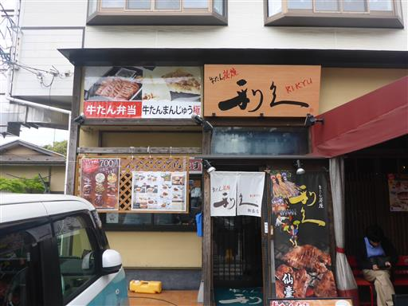
昼食後は土産物屋に足を運ぶ。
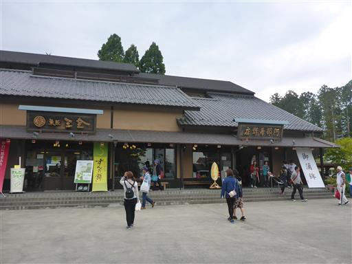
ずんだ茶寮でずんだシェイクを注文。
ずんだとは枝豆をすりつぶしたもので、主に東北地方で食されている。
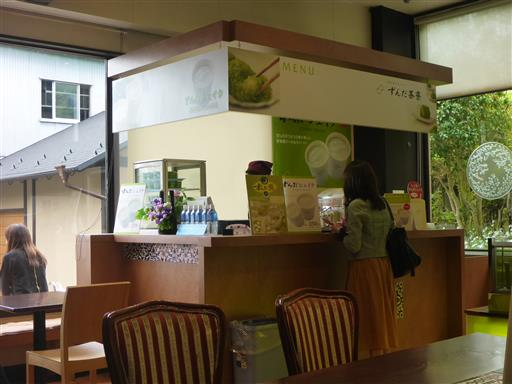
ストローで吸ってもなかなかシェイクが出てこず、子供たちは大苦戦だ。
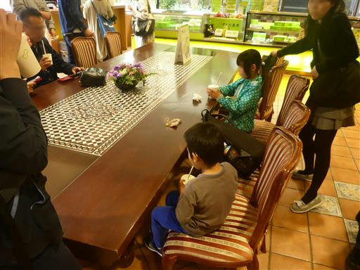
続いて、こけし屋さんに入ってみる。
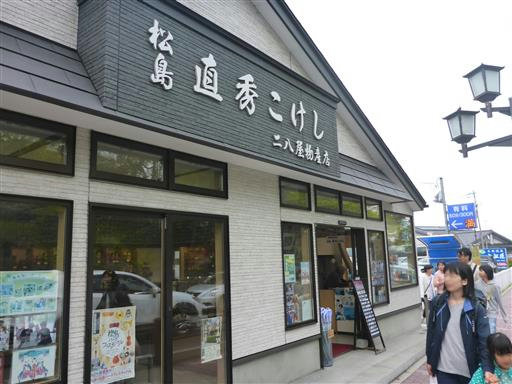
木を削ってこけしを作っている。あっという間に形が出来上がっていく。
ここでお土産にけん玉、こま、カスタネットを購入。
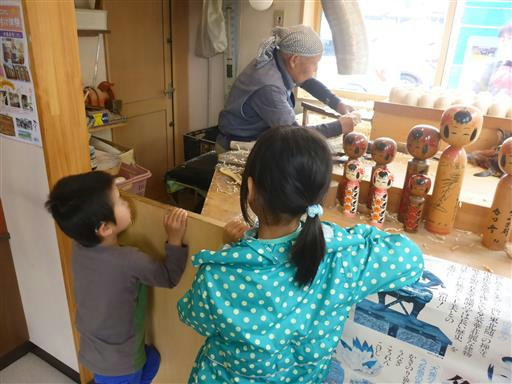
観光の最後に瑞巌寺を見学する。非常に名高い寺院で本堂は国宝に指定されている。
中に入ると見事な襖絵が見られる。
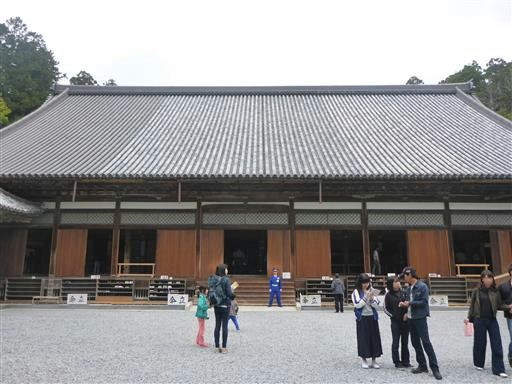
庫裏。屋根の上にもう1つ小さな建物が乗っていて、非常に不思議な造りだ。
庫裏とは台所のことで、上に乗っているのは煙出しらしい。
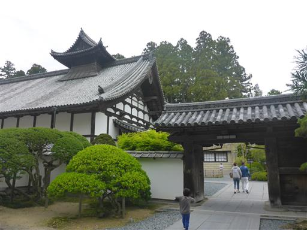
瑞巌寺の参道に津波到達地点と記載された立て札が立っている。
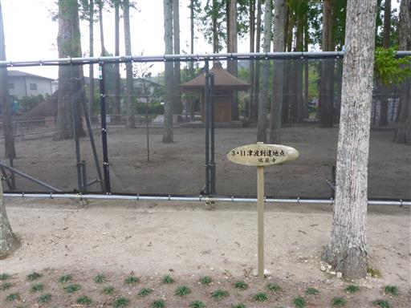
海沿いにある寺とはいえ、海岸線からそれなりに距離はある。
松島は比較的被害が少なく、歩いていても津波の痕跡は見当たらなかったが、
こんなところまで津波が来ていたとは知らなかった。
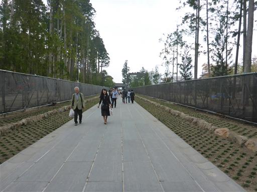
瑞巌寺の観光で今回の旅行は終了。
行きは東北道の渋滞で痛い目にあったので、帰りは常磐道を走ることにする。
この道は双葉町などの帰宅困難区域を通過する。
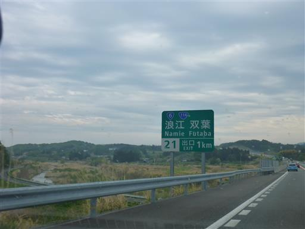
所々に放射線量を示した電光掲示板が設置されている。
最も高い場所で3.4μSv/h。日常生活で浴びる自然放射線量が1400μSv/年らしいので、
通過するだけであれば健康への影響はまず無いだろう。
今回の旅行も各地で素晴らしい景色を楽しめたが
蔵王をゆっくり観光できなかったのは残念だった。